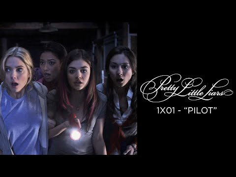
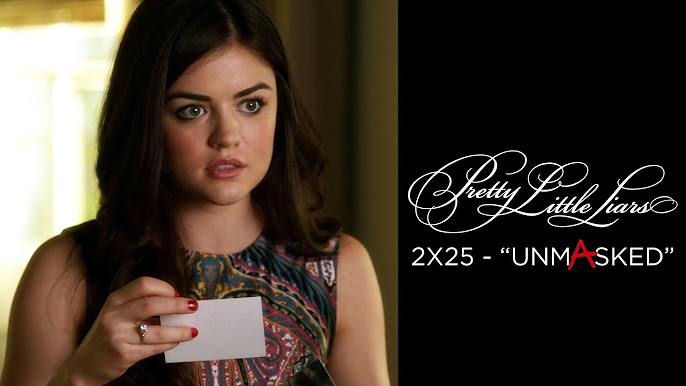
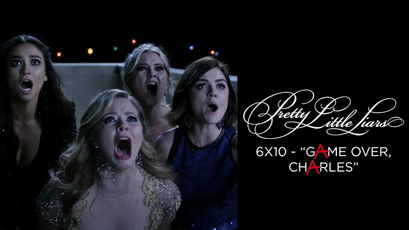

Episódios
Pretty Little Liars possui 160 episódios divididos em 7 temporadas, sendo que cada temporada apresenta novos desafios e revelações. A narrativa é construída com múltiplos mistérios que se desenrolam lentamente, misturando cenas de romance, drama familiar e investigação com uma tensão constante. Quase todo episódio termina com um "cliffhanger" — uma revelação impactante ou um momento de perigo que mantém o espectador curioso para o próximo capítulo. Destaques:
-

- 1x01 - Pilot: Início das ameaças anônimas um ano após o desaparecimento de Alison. 
- 2x25 - UnmAsked: Primeira revelação importante da identidade de "A". 
- 6x10 - Game Over, Charles: Reviravolta envolvendo o mistério central.
- 7x20 - Till Death Do Us Part: Último episódio da série, conclui as histórias principais.
Os episódios seguem uma estrutura em que as garotas tentam decifrar pistas deixadas por “A”, enquanto lidam com suas vidas pessoais, escola e relacionamentos. Em meio a tudo isso, há falsos suspeitos, traições e muitas máscaras — literalmente e simbolicamente. Alguns episódios especiais são temáticos, como os de Halloween, que costumam ter um tom mais sombrio e cinematográfico.
A série é conhecida por criar teorias e manter o mistério por várias temporadas. Revelações importantes, como a identidade da primeira "A" (Mona), da segunda (CeCe Drake), e de outros antagonistas ao longo das temporadas, são reveladas em episódios específicos que se tornaram os mais aguardados pelos fãs. O último episódio, de 2017, fechou muitos arcos e respondeu à maioria das perguntas que permearam a série por anos.